叠氮化银
叠氮化银的介绍
叠氮化银，白色粉末，熔点252℃，沸点297℃，不溶于冷水和碱，难溶于沸水，微溶于氨水，溶于稀硝酸等，对热或撞击敏感。
实验部分
警告
叠氮化钠和叠氮化氢有剧毒
所需试剂和仪器
试剂
- 银
- 稀硝酸
- 叠氮化钠
- 蒸馏水
仪器
- 电子秤
- 烧杯
- 电磁炉
- 漏斗
- 滤纸
- 玻璃棒
- 抽滤装置
- 磁力搅拌机&搅拌子
步骤
- 称取3.3g
银于烧杯中。
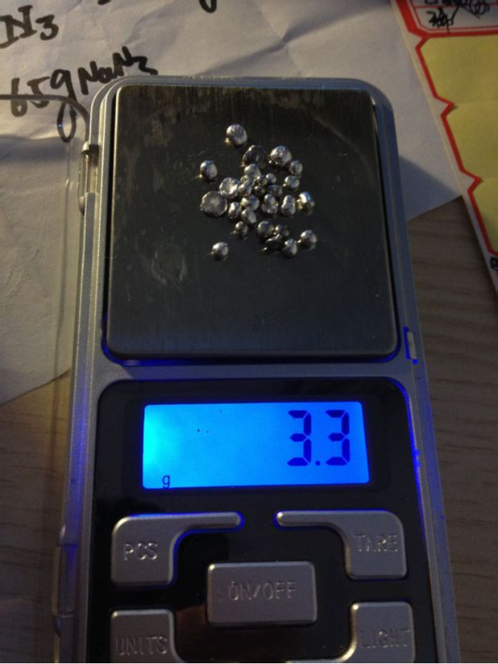
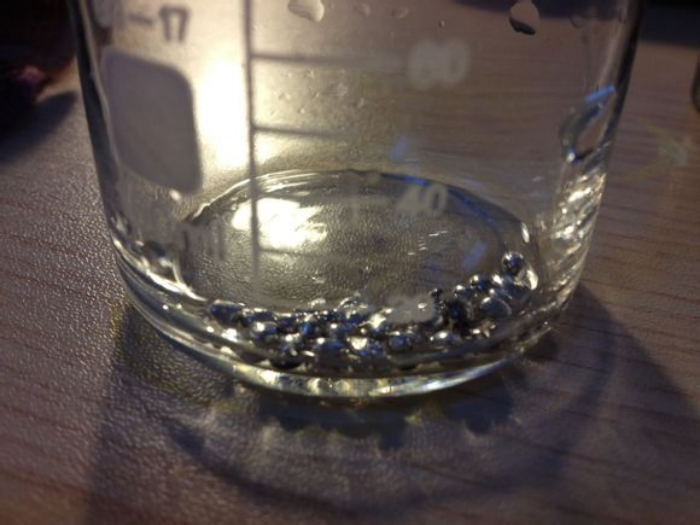 - 加入适量
稀硝酸，加热，如银无法全部溶解可补加稀硝酸。

- 加热
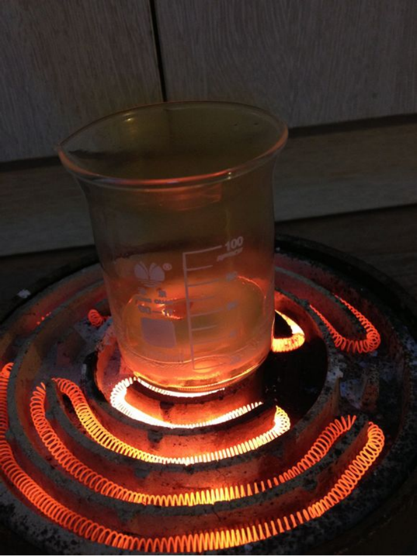 银完全溶解后，再持续煮沸溶液数分钟，以除去过量的稀硝酸，防止后续步骤中生成剧毒的叠氮化氢气体。
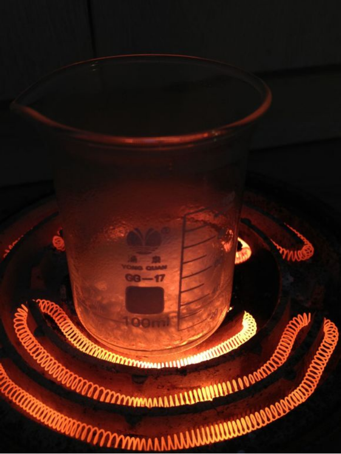- 我直接蒸成硝酸银固体了，然后加适量
蒸馏水溶解，过滤，加蒸馏水稀释至20毫升左右，便得到了澄清的硝酸银溶液。

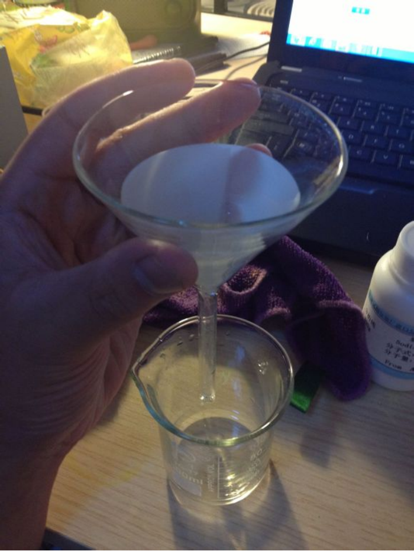 - 称取2g
叠氮化钠，用20ml蒸馏水溶解。这玩意儿剧毒，不要撒到外面，不要接触皮肤。
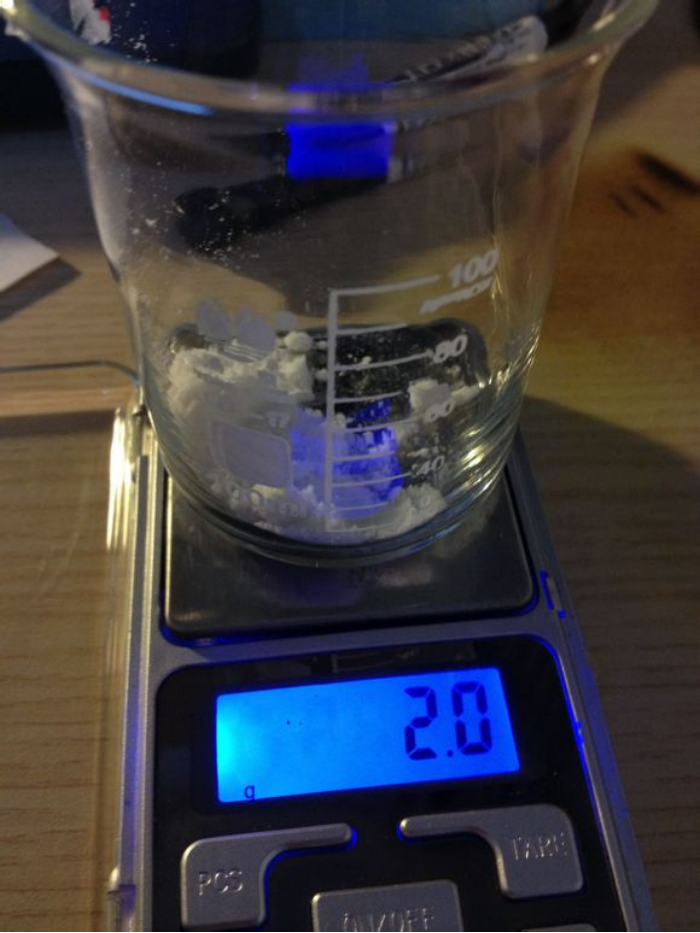 - 将
叠氮化钠溶液置于磁力搅拌机上凉拌，并滴入硝酸银溶液，可以看到产生了大量白色沉淀。溶液为黄色的原因是没洗干净的搅拌子污染，对实验无影响
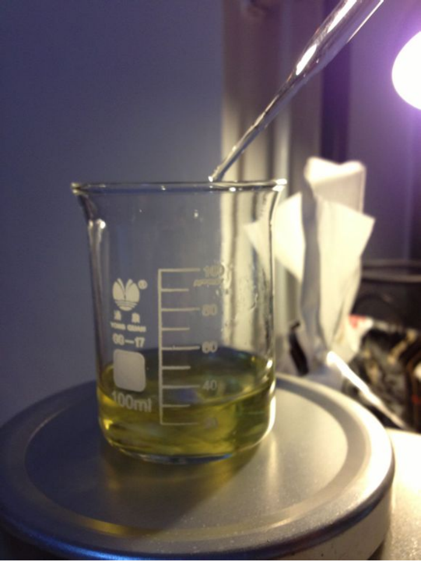 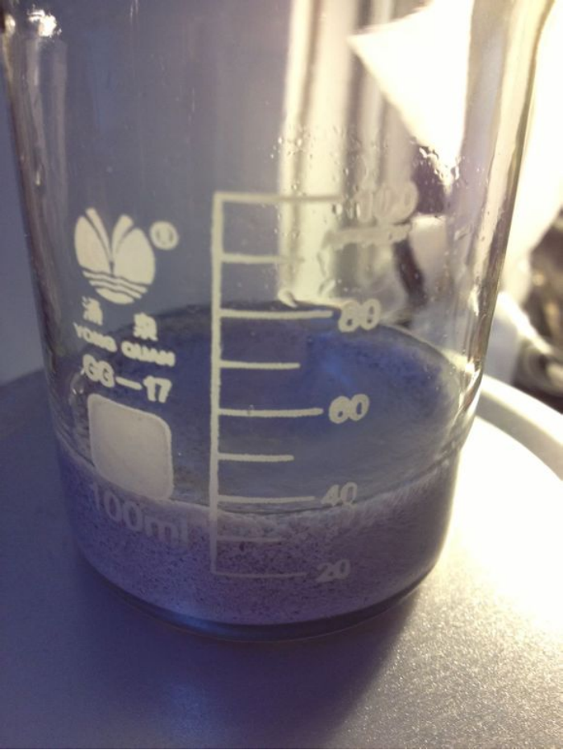 - 倾析溶液，再加
蒸馏水洗涤，反复数次。
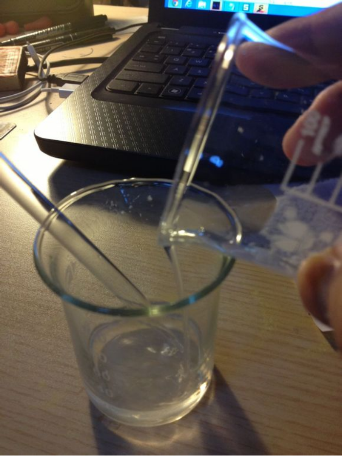
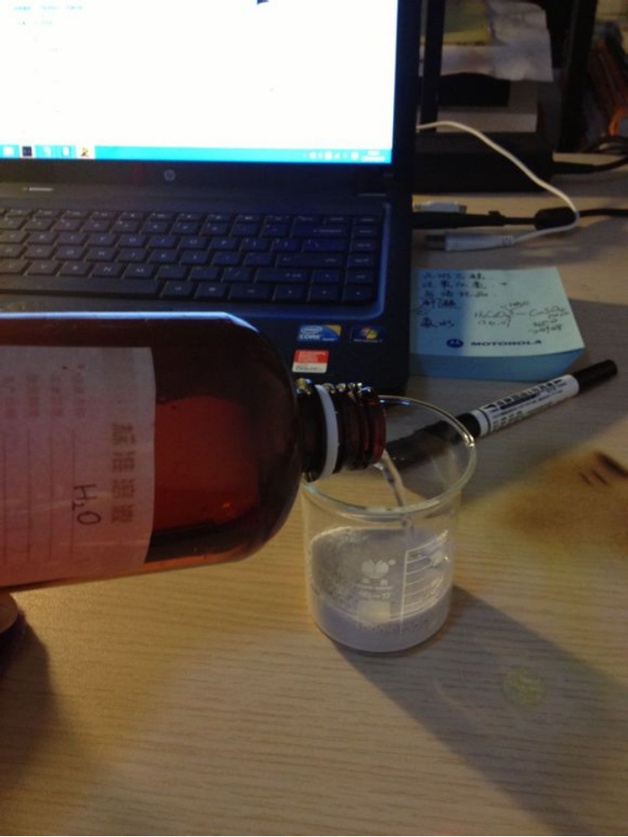 - 抽滤，干燥，得产物，产量4.0g（已去皮），产率87.273%。
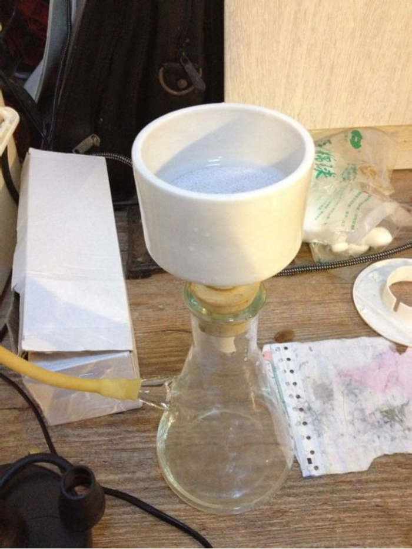
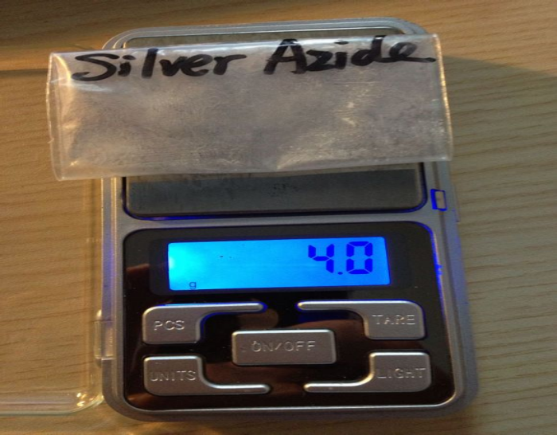
备注
如果您遵循本指南的制作流程而发现问题或可以改进的流程，请提出 Issue 或 Pull request 。